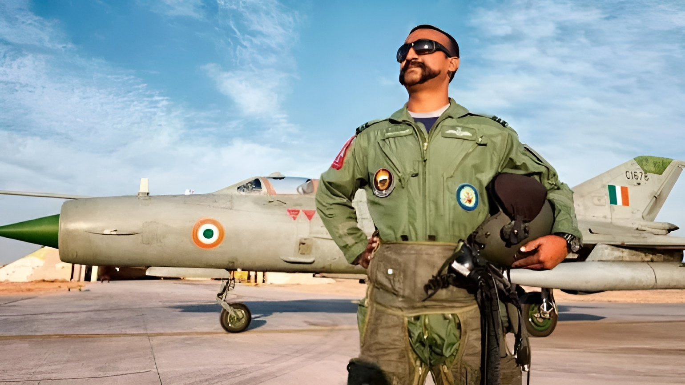

Abhinandan Varthaman

The man who exemplified extraordinary courage and resilience as an Indian Air Force
officer during the 2019 India-Pakistan conflict.
Here's a time line of Abhinandan Varthaman:
- June 21, 1983: Birth and Early Years
- Abhinandan Varthaman is born on June 21, 1983, in Tambaram, Chennai, India.
- Growing up, he shows early signs of passion for aviation and a keen interest in the Indian Armed Forces.
- 2000-2004: Education and Military Aspirations
- Attends school with a focus on science and mathematics.
- Develops a dream of joining the Indian Air Force and becoming a pilot.
- Pursues higher education with a goal to fulfill his military aspirations.
- 2005-2007: Training at the National Defence Academy (NDA)
- Abhinandan joins the National Defence Academy to undergo military training.
- Demonstrates exceptional skills and dedication during his training period.
- 2007-2009: Further Training and Specialization
- Pursues advanced training in aeronautics and fighter aircraft.
- Graduates with honors, specializing in the operation of fighter jets.
- 2010-2019: Service in the Indian Air Force
- Abhinandan Varthaman serves as a pilot in the Indian Air Force, rising through the ranks.
- Participates in routine missions and training exercises, showcasing his flying skills and commitment.
- February 27, 2019: Aerial Engagement and Capture
- Engages in aerial combat during the India-Pakistan tensions following the Pulwama attack.
- Shot down while flying a MiG-21 Bison and lands in the Pakistani-administered Kashmir region.
- Captured by Pakistani armed forces, marking a critical moment in his military career.
- February 28, 2019: Release and Return to India
- Pakistan announces Abhinandan's release as a gesture of goodwill.
- Handed over to Indian authorities at the Wagah-Attari border crossing.
- Returns to India, receives a hero's welcome, and undergoes medical examination and debriefing.
- March 2019 Onward: Post-Release Phase
- Awarded the Vir Chakra, India's third-highest wartime gallantry award.
- Expresses gratitude for the support received from the nation and resumes active duty with the Indian Air Force.